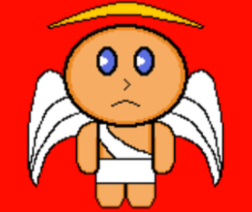

Hell's Angel

Hell's Angel is a top-down action-adventure game set in the fiery depths of hell. The protagonist is a small angel who has fallen from the heights of heaven, crashing into the deepest, darkest pits of hell. With their wings broken and weakened from the fall, the angel must find a way to escape the hostile, labyrinthine underworld and ascend back to the heavens.
Play Now